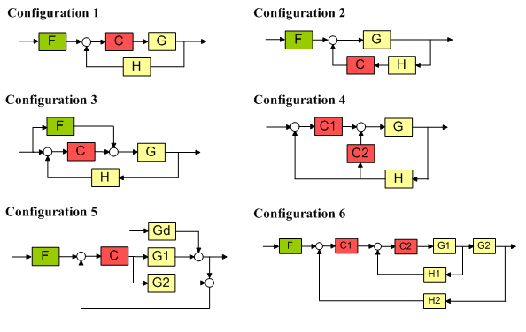

SISO 設計ツールをプログラム的に初期化
このデモでは、コマンド ラインを使用して SISO 設計ツールを設定する方法、および SISO ツール設計セッションの開始をカスタマイズするための関数の作成方法を示します。
目次
SISO 設計ツールの設定
SISO 設計ツールでは、さまざまなフィードバック制御システム設定を使用できます。次の 6 種類の設定を使用できます。
1) フォワード パスの補償器とプリフィルターを持つ標準的なフィードバック ループ。
2) フィードバック パスの補償器とプリフィルターを持つ標準的なフィードバック ループ。
3) フィードフォワード補償とフォワード パスの補償器を持つフィードバック ループ。この設定は、通常、システムに作用する前に測定できる外乱を減衰するために使用されます。
4) 最初の複数ループ設計設定。この設定では、制御ループの一部を分離することにより、設計を複数のステップに分けることができます。
5) 標準的な内部モデル コントロール (IMC) 構造。
6) 2 番目の複数ループ設計設定。この設定では、制御ループの一部を分離することにより、設計を複数のステップに分けることができます。

既定の設定では、SISO 設計ツールは設定 1 を使用して初期化されます。その後で、SISO 設計ツール内から、既定の設定で使用される設定を変更することができます。または、このデモで説明するとおり、コマンド ラインを使用して SISO 設計ツールを初期化することもできます。
SISO 設計ツールの初期化
コマンド sisoinit は、既定の SISO ツール設定オブジェクトを作成するために使用されます。たとえば、以下の設定を使用して SISO ツールを起動したいとします。
- 設定 4 によって定義されるフィードバック アーキテクチャ
- 値 tf(1,[1,1]) を持つプラント G
- 外側の開ループの根軌跡とボードエディター
- 内側の開ループのニコルス エディター
まず、sisoinit および引数としての設定を使用して、設計初期化オブジェクトが作成されます。この例の場合、設定は 4 です。
s = sisoinit(4)
Name: ''
Configuration: 4
Description: 'Design snapshot.'
FeedbackSign: [2x1 double]
Input: {4x1 cell}
Output: {2x1 cell}
G: [1x1 sisodata.system]
H: [1x1 sisodata.system]
C1: [1x1 sisodata.TunedZPKSnapshot]
C2: [1x1 sisodata.TunedZPKSnapshot]
OL1: [1x1 sisodata.TunedLoopSnapshot]
OL2: [1x1 sisodata.TunedLoopSnapshot]
システム モデル コンポーネントは、プロパティ C1、C2、G、および F によって定義されます。システムの開ループは、外側ループの場合はプロパティ OL1、内側ループの場合は プロパティ OL2 によって定義されます。
次のステップは、プラント G の値を指定することです。
s.G.Value = tf(1,[1,1]);
次に、開ループごとに表示するエディターを指定できます。また、意味のある名前をループに付けて、SISO ツールでループを識別しやすくすることもできます。
s.OL1.Name = 'Outer Loop'; s.OL1.View = {'rlocus','bode'}; s.OL2.Name = 'Inner Loop'; s.OL2.View = {'nichols'};
必要な設定が適用されたので、この設定タイプを使用して SISO 設計ツールを起動できます。
>> sisotool(s)

カスタムの初期化関数の作成
頻繁に使用される設定で SISO 設計ツールを起動するには、カスタムの初期化関数を作成しておくと便利です。たとえば、上記の例は、プラントのダイナミクスに関する入力引数と共に関数に組み込むことができます。これは次の関数で行われます。
type mycustomsisotoolfcn
function mycustomsisotoolfcn(G)
% mycustomsisotoolfcn(G)
%
% Creates the following SISO Design Tool session:
% 1) Configuration 4 with the plant specified by G
% 2) Root locus and bode editors for the outer-loop
% 3) Bode editor for the inner-loop.
% Copyright 1986-2005 The MathWorks, Inc.
% $Revision: 1.1.4.2.2.1 $ $Date: 2010/07/29 21:28:40 $
% Create initialization object with configuration 4
s = sisoinit(4);
% Set the value of the plant
s.G.Value = G;
% Specify the editors for the Open-Loop Responses
s.OL1.View = {'rlocus','bode'};
s.OL2.View = {'nichols'};
sisotool(s)
この関数を使用して SISO 設計ツールを起動するには、次のように入力します。
>> G = tf(1,[1,1]);
>> mycustomsisotoolfcn(G)